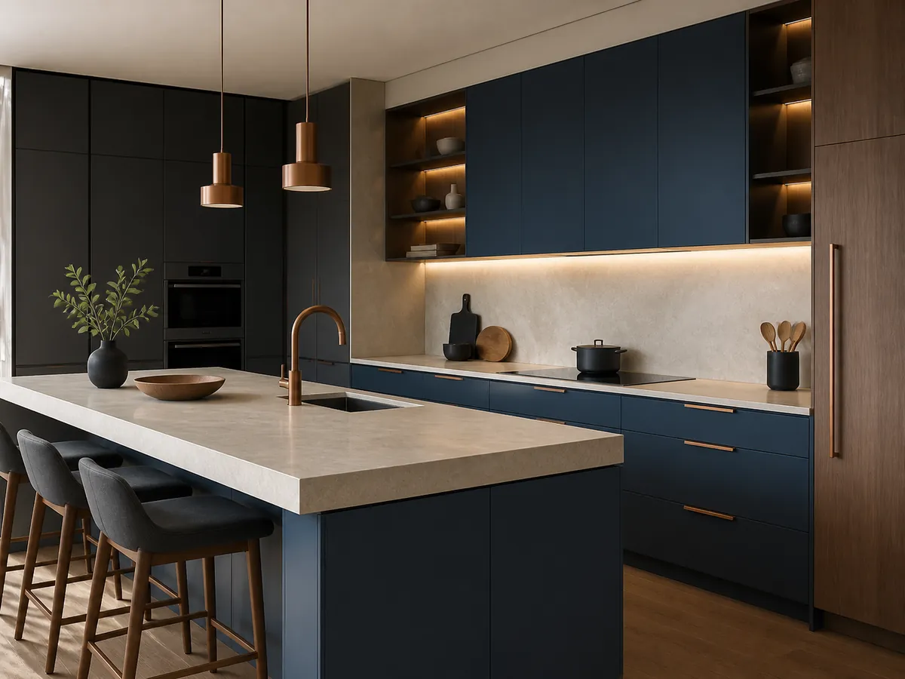
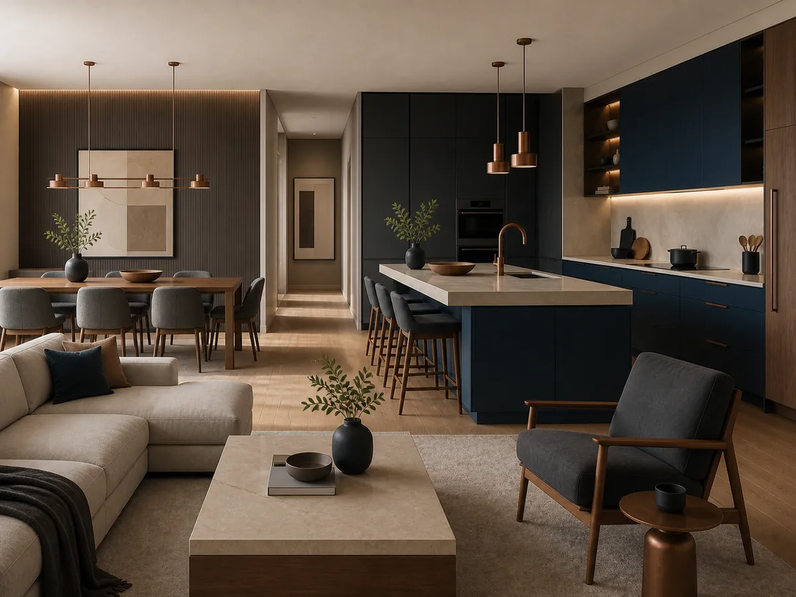
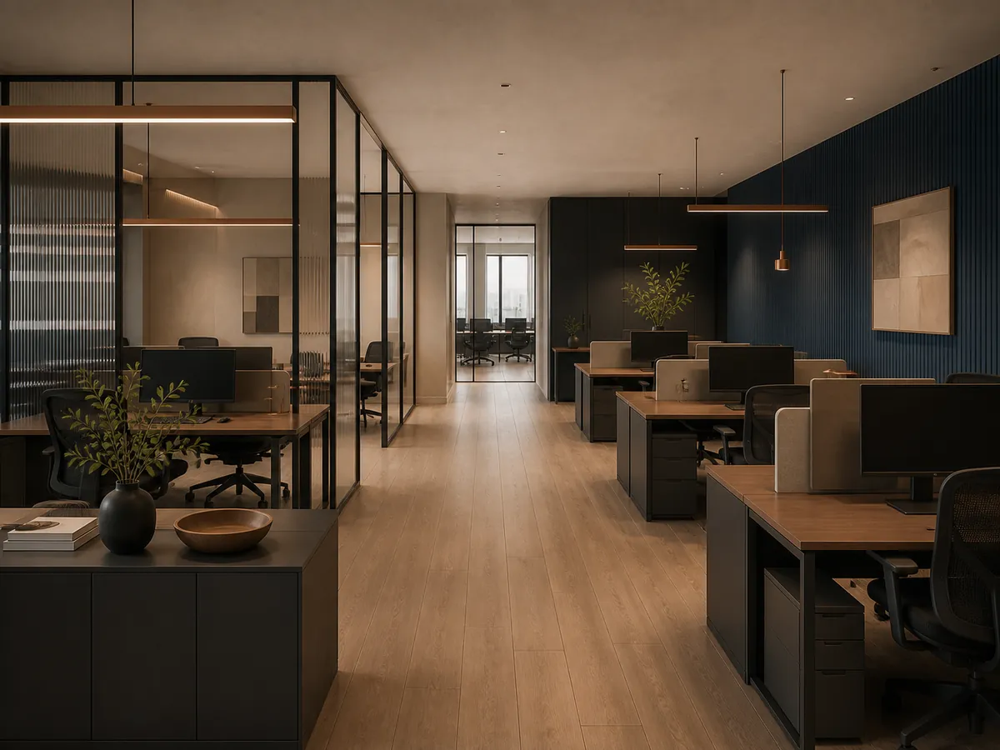
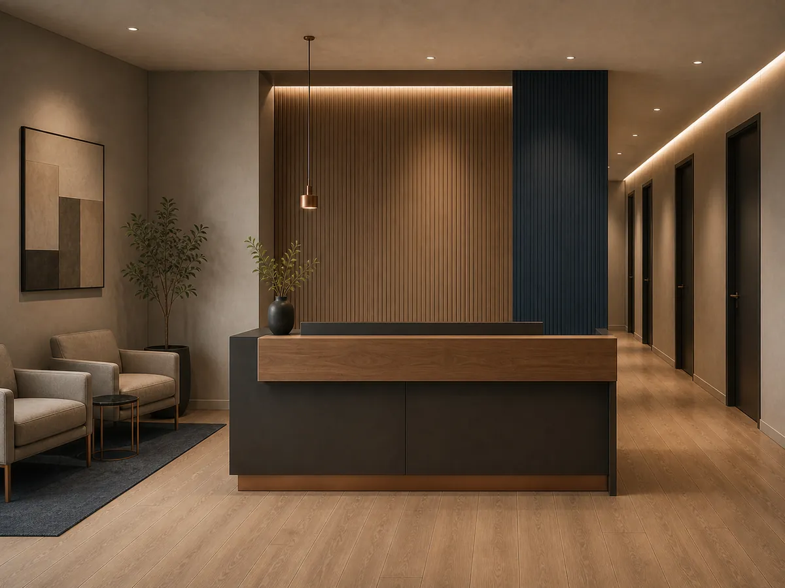
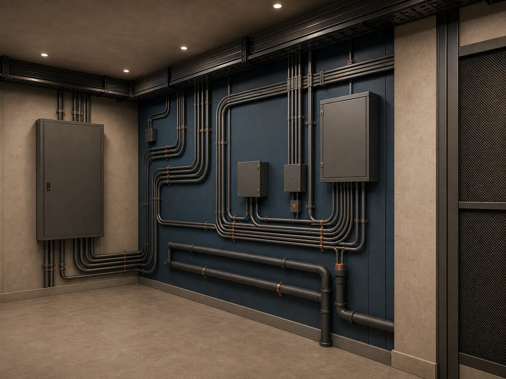
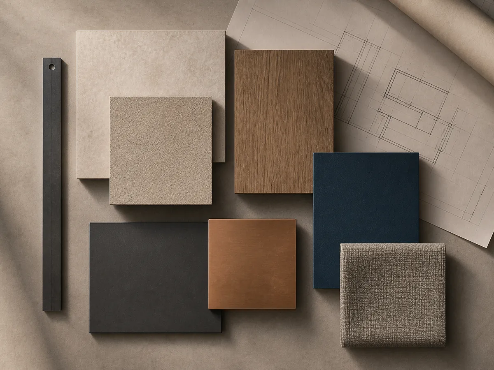

Escopo definido
Necessidades, limites e entregas organizados antes do início.
Demonstração fictícia desenvolvida pela Áurea Digital
Voltar para a Áurea DigitalUma apresentação demonstrativa para empresas e profissionais que atuam com reformas, acompanhamento técnico e execução de serviços residenciais ou comerciais.
Necessidades, limites e entregas organizados antes do início.
Uma visão clara do que está em análise, validação ou execução.
Decisões importantes alinhadas antes de cada avanço do projeto.
Serviços
Possibilidades demonstrativas que podem ser adaptadas conforme a necessidade, a avaliação técnica e o escopo de cada trabalho.
Reorganização e renovação de ambientes, conforme avaliação e escopo.
Simular solicitaçãoAdequação de espaços para atendimento, operação ou apresentação do negócio.
Simular solicitaçãoOrganização de etapas, registros e validações durante a execução.
Ver acompanhamentoInstalações, acabamentos e adequações definidos após análise da necessidade.
Simular solicitaçãoProjetos conceituais
Todas as composições abaixo são conceituais e não representam obras executadas, clientes ou resultados reais.
Exibindo 6 projetos conceituais.

Composição visual de reorganização funcional e atualização de acabamentos.

Referência de integração de ambientes e planejamento das etapas de intervenção.

Exemplo de distribuição para atendimento, circulação e apoio operacional.

Possibilidade visual para recepção, espera e áreas reservadas de atendimento.

Representação demonstrativa de pontos de verificação e organização técnica.

Estudo visual de materiais, encontros e sequência de aplicação dos acabamentos.
Como funciona
Em um projeto real, visitas, responsabilidades, cronograma e entregas seriam definidos conforme a necessidade e o escopo aprovado.
Contexto, necessidade e informações básicas do espaço.
Compreensão do problema e dos pontos que precisam ser avaliados.
Organização do que pode ser desenvolvido e do que não está incluído.
Etapas, validações e referências necessárias para a proposta.
Acompanhamento das atividades conforme o planejamento aprovado.
Conferência das entregas e orientação sobre os próximos cuidados.
Acompanhamento visual
Este painel ilustra como informações de acompanhamento poderiam ser organizadas em uma solução digital desenvolvida conforme o escopo.
Orçamento
Preencha os campos para conhecer o funcionamento da interface. Esta demonstração não gera orçamento nem contato.
A solicitação abaixo direciona somente para a simulação desta página.